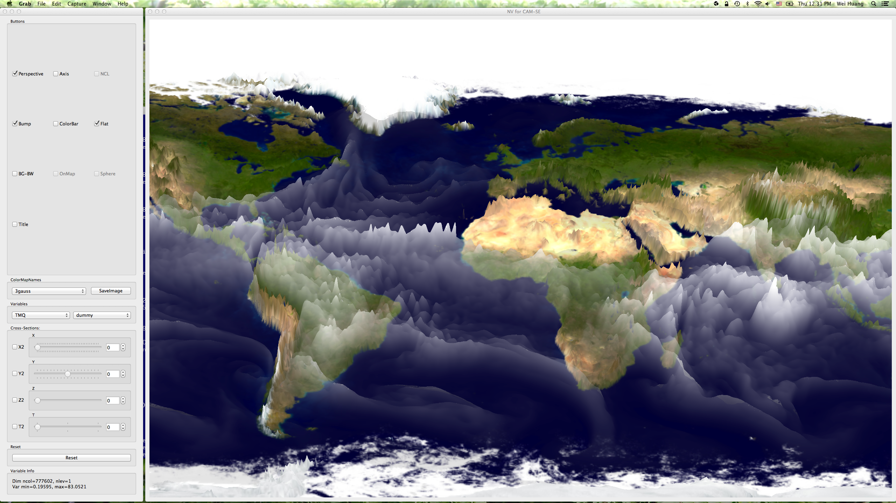
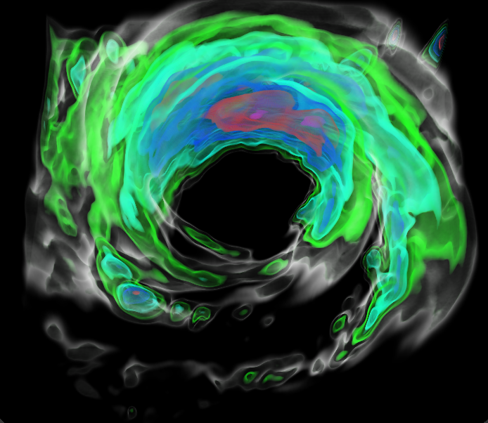
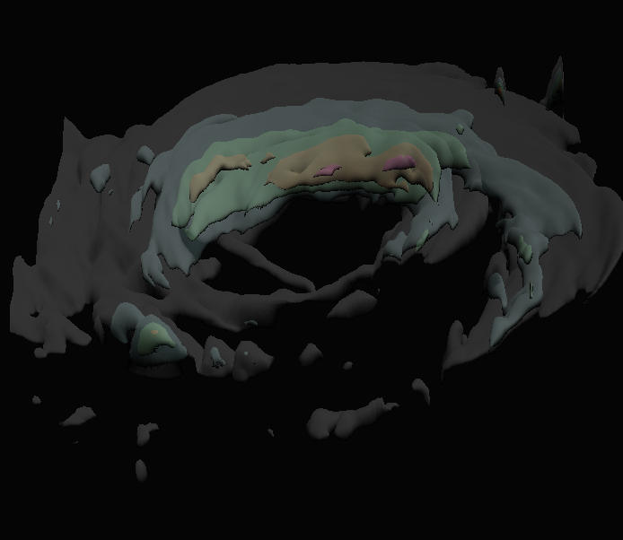

SV
-- Star Viewer, a visualization tool that integrates
NCL,
openGL,
and then uses
QT
as a graphical user interface.
Star Viewer
The Star Viewer (SV) integrates NCL with OpenGL,
and then uses Qt as graphical user interface to
display images generated from NCL or images from OpenGL.
Currently, SV can view data from the CAM-FV, CAM-SE,
POP, WRF and MPAS models.
SV uses NCL's file reader which can easily handle the netCDF-3/4
file formats used by the models. Since NCL's file reader can
readily handle GRIB-1/2 and the various 'flavors' of HDF,
future SV applications could include datasets in these formats.
SV has inherited all color tables from NCL.
This allows users to specify colormaps best suited to the data.
Programmed in OpenGL, users can use the same high quality tools
developed for video games to view their scientific data.
An image of Relative-Humidity cross-setion (from CAM-SE) on sphere.

An image of Cloud (rain component) and wind vector (from WRF).

A short movie of a bumped field from CAM-SE.
Click Here to play the movie.
Volume rendering in SV.
Raycasting:

Raytracing:

Mail comments/suggestions to: Star Viewer.